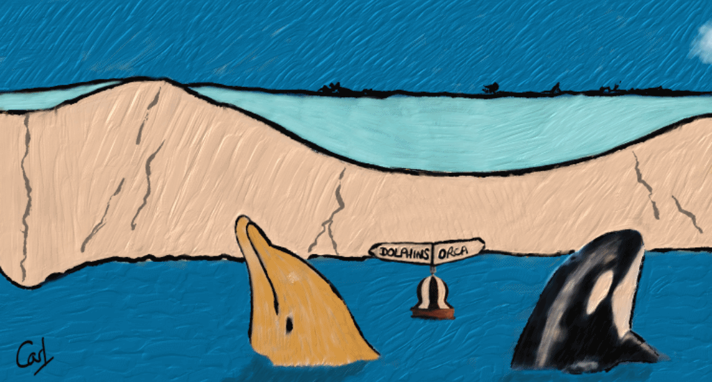
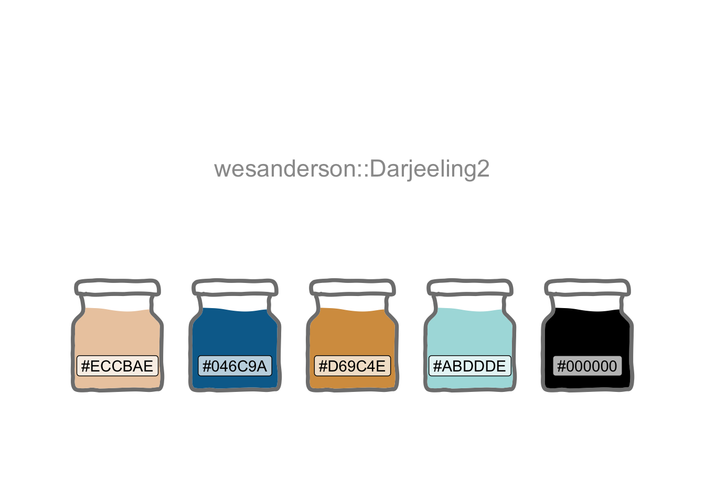
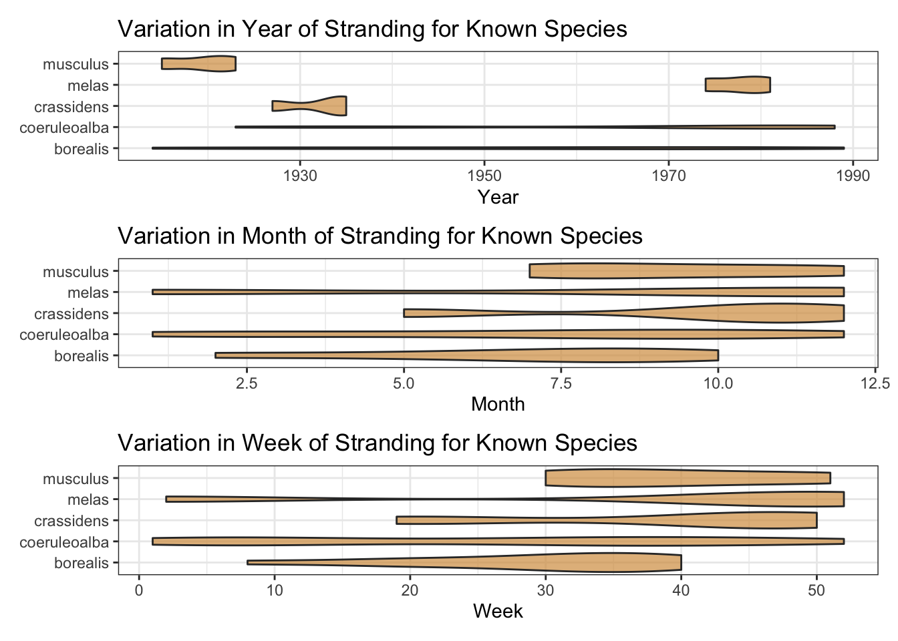
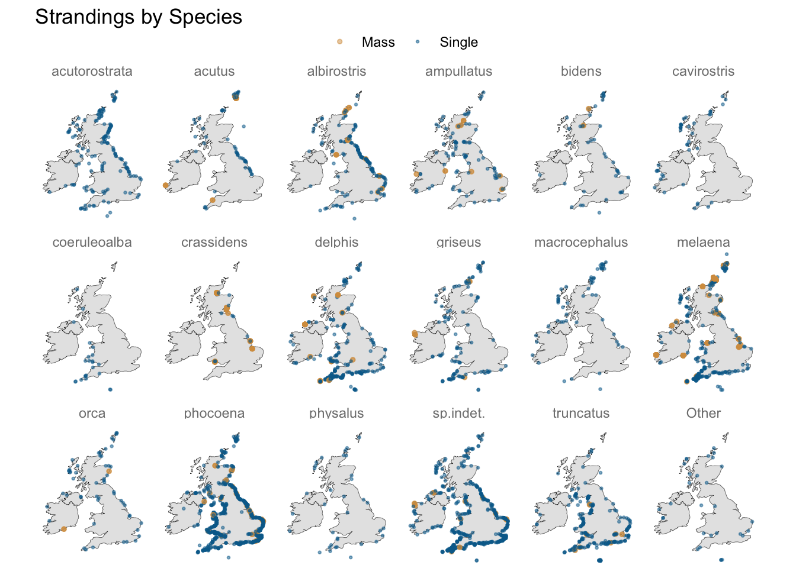
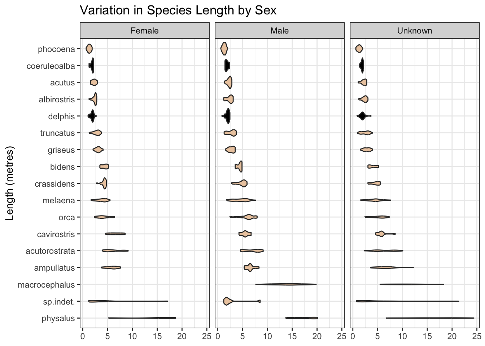
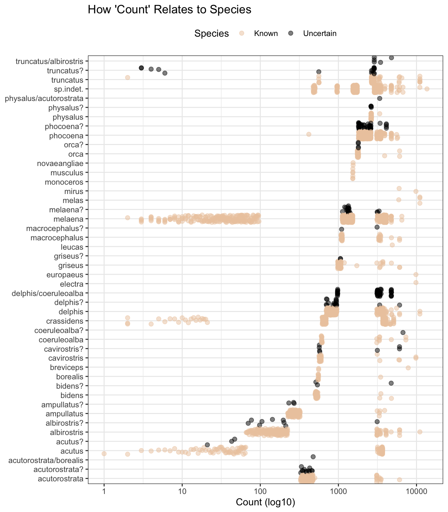
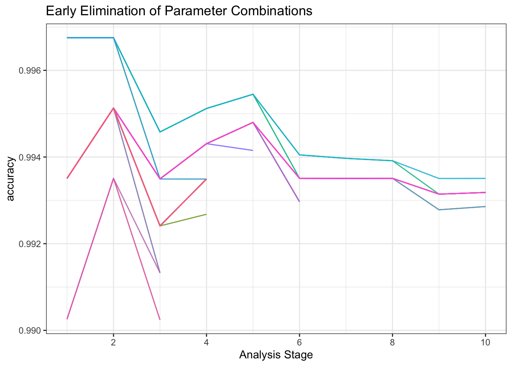
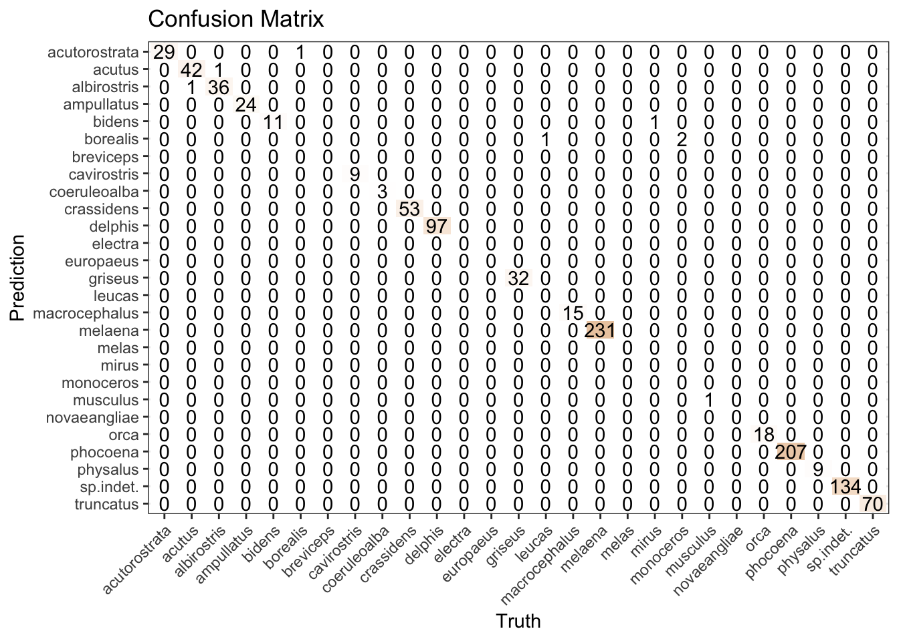

library(conflicted)
library(tidyverse)
conflict_prefer_all("dplyr", quiet = TRUE)
library(tidymodels)
library(probably)
library(finetune)
library(textrecipes)
library(stopwords)
library(clock)
library(glue)
library(janitor)
library(vip)
conflicts_prefer(vip::vi)
library(tictoc)
library(patchwork)
library(future)
library(paletteer)
library(ggfoundry)
library(usedthese)
conflict_scout()
plan(multisession, workers = 10)Sea Monsters that Lost their Way
R
geospatial
machine learning
textual analysis
Predicting uncertain species of cetacean strandings recorded by the Natural History Museum

The Natural History Museum began recording cetacean (whales, dolphins and porpoises) strandings in 1913 (Natural History Museum 2019). Let’s explore this 1913-1989 dataset.
theme_set(theme_bw())
pal_name <- "wesanderson::Darjeeling2"
pal <- paletteer_d(pal_name)
display_palette(pal, pal_name)
strandings_df <- read_csv("strandings.csv", show_col_types = FALSE) |>
clean_names() |>
mutate(
date_rep = date_parse(date, format = "%d/%m/%Y"),
length = parse_number(length_et),
species_lumped = fct_lump_n(species, 20),
across(ends_with("_val"), as.integer),
rep_comment = comment
)
# glimpse(strandings_df)Exploratory
Some of the species labels contain a question mark or forward slash. This indicates uncertainty, so it might be fun to see if a machine learning model (multi-class classification) could learn from the known species and suggest an appropriate species where it’s uncertain.
strandings_df2 <-
strandings_df |>
mutate(species_uncertainty =
if_else(str_detect(species, "[?/]"), "Uncertain", "Known"))
strandings_df2 |>
filter(species_uncertainty == "Uncertain") |>
count(species, sort = TRUE, name = "Count") |>
slice_head(n = 6)| species | Count |
|---|---|
| delphis/coeruleoalba | 48 |
| phocoena? | 42 |
| melaena? | 20 |
| delphis? | 18 |
| truncatus? | 18 |
| acutorostrata? | 12 |
The date variable has many NA’s. Fortunately, the components to construct many of these are in the year_val, month_val and day_val variables. With a little wrangling and imputation, we can coalesce these variables into a new date. This will be useful since plots of sample species by year, month and week of stranding suggest a de-constructed date could be a useful predictor.
strandings_df2 |>
select(date_rep, year_val, month_val, day_val) |>
summary() date_rep year_val month_val day_val
Min. :1913-02-13 Min. : 0 Min. : 0.000 Min. : 0.00
1st Qu.:1933-09-09 1st Qu.:1933 1st Qu.: 4.000 1st Qu.: 9.00
Median :1954-04-13 Median :1955 Median : 7.000 Median :16.00
Mean :1955-01-08 Mean :1954 Mean : 6.766 Mean :15.66
3rd Qu.:1979-03-21 3rd Qu.:1979 3rd Qu.:10.000 3rd Qu.:22.00
Max. :1989-12-25 Max. :1989 Max. :12.000 Max. :31.00
NA's :121 strandings_df3 <- strandings_df2 |>
mutate(
month_val = if_else(month_val == 0, mean(month_val) |>
as.integer(), month_val),
day_val = if_else(day_val == 0, mean(day_val) |> as.integer(), day_val),
day_val = if_else(day_val == 0, 1L, day_val),
date2 = date_build(year_val, month_val, day_val, invalid = "NA"),
.by = species
) |>
mutate(date3 = coalesce(date_rep, date2),
date_rep = if_else(is.na(date_rep), lag(date3), date3)
) |>
select(-date2, -date3, -ends_with("_val"))
example_species <-
c("musculus", "melas", "crassidens", "borealis", "coeruleoalba")
known_species <- strandings_df3 |>
filter(species_uncertainty == "Known")
plot_date_feature <- \(var) {
known_species |>
mutate(
year = get_year(date_rep),
month = get_month(date_rep),
week = as_iso_year_week_day(date_rep) |> get_week()
) |>
filter(species %in% example_species) |>
count(species, {{ var }}) |>
ggplot(aes({{ var }}, species)) +
geom_violin(
alpha = 0.7,
fill = pal[3],
show.legend = FALSE
) +
labs(
title = glue("Variation in {str_to_title(as.character(var))}",
" of Stranding for Known Species"),
x = NULL, y = glue("{str_to_title(as.character(var))}")
)
}
c("year", "month", "week") |>
map(sym) |>
map(plot_date_feature) |>
wrap_plots(ncol = 1)
Do latitude and longitude carry useful predictive information?
A geospatial visualisation of strandings shows some species do gravitate towards particular stretches of coastline, e.g. “acutus” and “albirostris” to the east, and “coeruleoalba” to the south-west.
Some species may also be more prone to mass stranding, so something that indicates whether a species has such a history (in these data) may be worth including in the mix.
uki <- map_data("world", region = c("uk", "ireland"))
labels <- c("Mass", "Single")
uki |>
ggplot() +
geom_map(aes(long, lat, map_id = region), map = uki,
colour = "black", fill = "grey90", size = 0.1) +
geom_jitter(aes(longitude, latitude, colour = mass_single,
size = mass_single),
alpha = 0.5, data = known_species) +
facet_wrap(~ species_lumped, nrow = 3) +
coord_map("mollweide") +
scale_size_manual(values = c(1, 0.5), labels = labels) +
scale_colour_manual(values = pal[c(3, 2)], labels = labels) +
theme_void() +
theme(legend.position = "top",
strip.text = element_text(colour = "grey50")) +
labs(title = "Strandings by Species",
colour = NULL, size = NULL)
# Add history of mass stranding
strandings_df4 <- strandings_df3 |>
mutate(mass_possible = min(mass_single, na.rm = TRUE),
.by = species)Some records are missing the length measurement of the mammal. Nonetheless, where present, this is likely to be predictive, and may help, for example, separate species labelled as “delphis/coeruleoalba” where the length is at the extreme ends of the “delphis” range as we see below. And the range of length may differ by mammal sex.
known_species |>
mutate(sex = case_match(
sex,
"M" ~ "Male",
"F" ~ "Female",
.default = "Unknown"
)) |>
filter(species_lumped != "Other") |>
count(species_lumped, length, sex) |>
mutate(species_lumped = fct_reorder(species_lumped,
desc(length), min, na.rm = TRUE)) |>
ggplot(aes(length, species_lumped)) +
geom_violin(aes(fill = if_else(str_detect(species_lumped, "^de|^co"),
TRUE, FALSE)), show.legend = FALSE) +
facet_wrap(~ sex) +
scale_fill_manual(values = pal[c(1, 5)]) +
labs(title = "Variation in Species Length by Sex",
x = NULL, y = "Length (metres)")
With map coordinates not always available, county could be, with a little string cleaning, a useful additional predictor.
strandings_df4 |>
count(county) |>
filter(str_detect(county, "Shet|Northumberland")) |>
rename(County = county, Count = n)| County | Count |
|---|---|
| Fair Isle, Shetland Isles | 1 |
| Northumberland | 89 |
| Northumberland. | 1 |
| Shetland Islands, Scotland | 232 |
| Shetland Isles, Scotland | 35 |
| Shetland, Scotland | 1 |
| Shetlands, Scotland | 1 |
regex_pattern <-
c("[,/].*$",
"(?<!Che|Hamp|Lanca|North York)-?shire",
" Isl.*$",
" &.*$",
"[-.]$")
strandings_df5 <- strandings_df4 |>
mutate(
county = str_remove_all(county, str_c(regex_pattern, collapse = "|")),
county = recode(
county,
"Carnarvon" = "Caernarvon",
"E.Lothian" = "East Lothian",
"Shetlands" = "Shetland",
"W.Glamorgan" = "West Glamorgan",
"S.Glamorgan" = "South Glamorgan"
)
)
strandings_df4 |>
summarise(counties_before = n_distinct(county))| counties_before |
|---|
| 146 |
strandings_df5 |>
summarise(counties_after = n_distinct(county))| counties_after |
|---|
| 109 |
Whilst count also appears to hold, based on the plot pattern below, species-related information, I’m not going to use it as a predictor as we do not know enough about how it was derived, as reflected in these variable descriptions.
strandings_df5 |>
ggplot(aes(count, species, colour = species_uncertainty)) +
geom_jitter(alpha = 0.5, size = 2) +
scale_x_log10() +
scale_colour_manual(values = pal[c(1, 5)]) +
labs(title = "How 'Count' Relates to Species",
x = NULL, y = "Count (log10)", colour = "Species") +
theme(legend.position = "top")
Modelling
So, I’ll set aside the rows where the species is uncertain (to be used later for new predictions), and I’ll train a model on 75% of known species, and test it on the remaining 25%. I’ll use the following predictors:
latitudeandlongitude- Mammal
lengthandsex mass_possibleindicating aspecieshistory of mass strandingsdatereported converted into decimal, week, month and yearcountymay be useful, especially where the longitude and latitude are missingfam_genuswhich narrows the range of likely species
I’d like to also make use of the textrecipes(Hvitfeldt 2022) package. I can tokenise the textual information in rep_comment and location to see if these add to the predictive power of the model.
I’ll tune the model using tune_race_anova(Kuhn 2022) which quickly discards hyperparameter combinations showing little early promise.
known_species <- strandings_df5 |>
filter(species_uncertainty == "Known") |>
mutate(across(
c(
"species",
"mass_single",
"mass_possible",
"county",
"location",
"sex",
"fam_genus"
),
factor
))
set.seed(123)
data_split <-
known_species |>
mutate(species = fct_drop(species)) |>
initial_split(strata = species)
train <- data_split |> training()
test <- data_split |> testing()
predictors <-
c(
"latitude",
"longitude",
"length",
"mass_single",
"mass_possible",
"county",
"location",
"rep_comment",
"sex",
"fam_genus"
)
recipe <-
train |>
recipe() |>
update_role(species, new_role = "outcome") |>
update_role(all_of(predictors), new_role = "predictor") |>
update_role(!has_role("outcome") & !has_role("predictor"),
new_role = "id") |>
step_date(date_rep, features = c("decimal", "week", "month", "year"),
label = FALSE) |>
step_tokenize(location, rep_comment) |>
step_stopwords(location, rep_comment) |>
step_tokenfilter(location, rep_comment, max_tokens = tune()) |> #100
step_tf(location, rep_comment) |>
step_zv(all_predictors()) |>
step_dummy(all_nominal_predictors())
xgb_model <-
boost_tree(trees = tune(), # 440
mtry = tune(), # 0.6
learn_rate = 0.02) |>
set_mode("classification") |>
set_engine("xgboost",
count = FALSE,
verbosity = 0,
tree_method = "hist")
xgb_wflow <- workflow() |>
add_recipe(recipe) |>
add_model(xgb_model)
set.seed(9)
folds <- vfold_cv(train, strata = species)
set.seed(10)
tic()
tune_result <- xgb_wflow |>
tune_race_anova(
resamples = folds,
grid = crossing(
trees = seq(200, 520, 40),
mtry = seq(0.5, 0.7, 0.1),
max_tokens = seq(80, 120, 20)
),
control = control_race(),
metrics = metric_set(accuracy)
)
toc()119.753 sec elapsedtune_result |>
plot_race() +
labs(title = "Early Elimination of Parameter Combinations")
set.seed(123)
xgb_fit <- xgb_wflow |>
finalize_workflow(tune_result |>
select_best(metric = "accuracy")) |>
fit(train)Having fitted the model with the 3080 records in the training data, I’ll test its accuracy on the 1028 records of known species the model has not yet seen.
Without spending time on alternative models, we’re getting a reasonable result for the “porpoise” of this post, as reflected in both the accuracy metric and confusion matrix.
xgb_results <- xgb_fit |>
augment(new_data = test)
xgb_results |>
accuracy(species, .pred_class)| .metric | .estimator | .estimate |
|---|---|---|
| accuracy | multiclass | 0.9931907 |
xgb_results |>
conf_mat(species, .pred_class) |>
autoplot(type = "heatmap") +
scale_fill_gradient2(
mid = "white",
high = pal[1],
midpoint = 0
) +
labs(title = "Confusion Matrix") +
theme(axis.text.x = element_text(angle = 45, hjust = 1))
The top variable importance scores include fam_genus, many of the rep_comment tokens, plus length, mass-possible, date_decimal, date_year, and latitude.
vi(xgb_fit |> extract_fit_parsnip()) |>
arrange(desc(Importance)) |>
mutate(ranking = row_number()) |>
slice_head(n = 40)| Variable | Importance | ranking |
|---|---|---|
| fam_genus_Phocoena | 0.1122588 | 1 |
| fam_genus_Globicephala | 0.1024888 | 2 |
| tf_rep_comment_unidentified | 0.0715584 | 3 |
| fam_genus_Delphinus | 0.0631823 | 4 |
| tf_rep_comment_false | 0.0511217 | 5 |
| fam_genus_Tursiops | 0.0468992 | 6 |
| fam_genus_Lagenorhynchus | 0.0419043 | 7 |
| fam_genus_Grampus | 0.0297059 | 8 |
| length | 0.0284722 | 9 |
| tf_rep_comment_sided | 0.0272743 | 10 |
| tf_rep_comment_lesser | 0.0248649 | 11 |
| fam_genus_Hyperoodon | 0.0230048 | 12 |
| tf_rep_comment_dolphin | 0.0228118 | 13 |
| tf_rep_comment_beaked | 0.0219151 | 14 |
| fam_genus_Pseudorca | 0.0218223 | 15 |
| tf_rep_comment_bottle | 0.0215637 | 16 |
| tf_rep_comment_porpoise | 0.0194644 | 17 |
| fam_genus_Orcinus | 0.0188337 | 18 |
| tf_rep_comment_long | 0.0172326 | 19 |
| tf_rep_comment_rorqual | 0.0161952 | 20 |
| fam_genus_Physeter | 0.0158765 | 21 |
| tf_rep_comment_finned | 0.0156477 | 22 |
| fam_genus_odontocete | 0.0145794 | 23 |
| tf_rep_comment_common | 0.0142945 | 24 |
| mass_possible_S | 0.0135635 | 25 |
| tf_rep_comment_white | 0.0120380 | 26 |
| fam_genus_Ziphius | 0.0116641 | 27 |
| fam_genus_Mesoplodon | 0.0110397 | 28 |
| tf_rep_comment_fin | 0.0105581 | 29 |
| tf_rep_comment_whale | 0.0102145 | 30 |
| tf_rep_comment_pilot | 0.0093067 | 31 |
| fam_genus_Stenella | 0.0087473 | 32 |
| date_rep_decimal | 0.0074321 | 33 |
| tf_rep_comment_risso’s | 0.0069388 | 34 |
| date_rep_year | 0.0067197 | 35 |
| fam_genus_cetacean | 0.0066044 | 36 |
| tf_rep_comment_sowerby’s | 0.0055218 | 37 |
| tf_rep_comment_nosed | 0.0053597 | 38 |
| tf_rep_comment_cuvier’s | 0.0040589 | 39 |
| tf_rep_comment_sperm | 0.0029688 | 40 |
Do the predictions look reasonable?
The class probability is spread across 27 species. I’m going to set a high threshold of 0.9, meaning the predicted species needs to be a pretty confident prediction.
xgb_preds <- xgb_fit |>
augment(new_data = strandings_df5 |>
filter(species_uncertainty == "Uncertain"))
species_levels <- xgb_preds |>
select(starts_with(".pred_"), -.pred_class) |>
names() |>
as.factor()
subset_df <- xgb_preds |>
mutate(
.class_pred = make_class_pred(
.pred_acutorostrata,
.pred_acutus,
.pred_albirostris,
.pred_ampullatus,
.pred_bidens,
.pred_borealis,
.pred_breviceps,
.pred_cavirostris,
.pred_coeruleoalba,
.pred_crassidens,
.pred_delphis,
.pred_electra,
.pred_europaeus,
.pred_griseus,
.pred_leucas,
.pred_macrocephalus,
.pred_melaena,
.pred_melas,
.pred_mirus,
.pred_monoceros,
.pred_musculus,
.pred_novaeangliae,
.pred_orca,
.pred_phocoena,
.pred_physalus,
.pred_sp.indet.,
.pred_truncatus,
levels = levels(species_levels),
min_prob = .9
)
)
subset_df |>
summarise(n = n(), .by = c(species, .class_pred)) |>
arrange(species, desc(n)) |>
rename("Actual" = species, "Predicted" = .class_pred, "Count" = n)| Actual | Predicted | Count |
|---|---|---|
| acutorostrata/borealis | .pred_acutorostrata | 1 |
| acutorostrata? | .pred_acutorostrata | 12 |
| acutus? | .pred_acutus | 3 |
| albirostris? | .pred_albirostris | 9 |
| ampullatus? | .pred_ampullatus | 3 |
| bidens? | .pred_bidens | 2 |
| bidens? | [EQ] | 1 |
| cavirostris? | .pred_cavirostris | 7 |
| coeruleoalba? | .pred_coeruleoalba | 1 |
| delphis/coeruleoalba | [EQ] | 48 |
| delphis? | .pred_delphis | 18 |
| griseus? | .pred_griseus | 2 |
| macrocephalus? | .pred_macrocephalus | 2 |
| melaena? | .pred_melaena | 20 |
| orca? | .pred_orca | 4 |
| phocoena? | .pred_phocoena | 42 |
| physalus/acutorostrata | [EQ] | 1 |
| physalus? | .pred_physalus | 4 |
| truncatus/albirostris | [EQ] | 5 |
| truncatus? | .pred_truncatus | 18 |
The majority of the 203 uncertain records are predicted to be as suspected in the original labelling. The remainder are classed as equivocal as they have not met the high bar of a 0.9-or-above probability for a single species.
R Toolbox
Summarising below the packages and functions used in this post enables me to separately create a toolbox visualisation summarising the usage of packages and functions across all posts.
used_here()| Package | Function |
|---|---|
| base | as.character[2], as.integer[2], c[13], is.na[1], levels[1], library[17], mean[2], min[1], names[1], seq[3], set.seed[4], summary[1] |
| clock | as_iso_year_week_day[1], date_build[1], date_parse[1], get_month[1], get_week[1], get_year[1] |
| conflicted | conflict_prefer_all[1], conflict_scout[1], conflicts_prefer[1] |
| dplyr | across[2], arrange[2], case_match[1], coalesce[1], count[4], desc[3], filter[7], if_else[6], lag[1], mutate[13], n[1], n_distinct[2], recode[1], rename[2], row_number[1], select[3], slice_head[2], starts_with[1], summarise[3] |
| finetune | control_race[1], plot_race[1], tune_race_anova[1] |
| forcats | fct_drop[1], fct_lump_n[1], fct_reorder[1] |
| future | plan[1] |
| generics | as.factor[1], augment[2], fit[1] |
| ggfoundry | display_palette[1] |
| ggplot2 | aes[6], autoplot[1], coord_map[1], element_text[2], facet_wrap[2], geom_jitter[2], geom_map[1], geom_violin[2], ggplot[4], labs[6], map_data[1], scale_colour_manual[2], scale_fill_gradient2[1], scale_fill_manual[1], scale_size_manual[1], scale_x_log10[1], theme[3], theme_bw[1], theme_set[1], theme_void[1] |
| glue | glue[2] |
| hardhat | extract_fit_parsnip[1] |
| janitor | clean_names[1] |
| paletteer | paletteer_d[1] |
| parsnip | boost_tree[1], set_engine[1], set_mode[1] |
| patchwork | wrap_plots[1] |
| probably | make_class_pred[1] |
| purrr | map[2] |
| readr | parse_number[1], read_csv[1] |
| recipes | all_nominal_predictors[1], all_predictors[1], has_role[2], recipe[1], step_date[1], step_dummy[1], step_zv[1], update_role[3] |
| rsample | initial_split[1], testing[1], training[1], vfold_cv[1] |
| stringr | str_c[1], str_detect[3], str_remove_all[1], str_to_title[2] |
| textrecipes | step_stopwords[1], step_tf[1], step_tokenfilter[1], step_tokenize[1] |
| tictoc | tic[1], toc[1] |
| tidyr | crossing[1] |
| tidyselect | all_of[1], ends_with[2] |
| tune | finalize_workflow[1], select_best[1], tune[3] |
| usedthese | used_here[1] |
| vip | vi[1] |
| workflows | add_model[1], add_recipe[1], workflow[1] |
| yardstick | accuracy[1], conf_mat[1], metric_set[1] |
References
Hvitfeldt, Emil. 2022. Textrecipes: Extra ’Recipes’ for Text Processing. https://CRAN.R-project.org/package=textrecipes.
Kuhn, Max. 2022. Finetune: Additional Functions for Model Tuning. https://CRAN.R-project.org/package=finetune.
Natural History Museum. 2019. Query on the Natural History Museum Data Portal (Data.nhm.ac.uk) (4311 Records). Natural History Museum. https://doi.org/10.5519/QD.IWG63595.